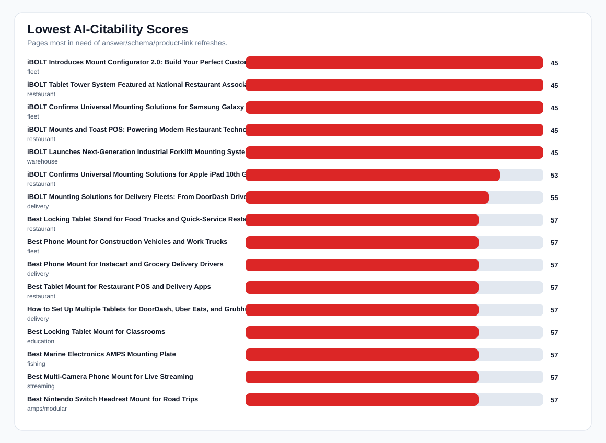
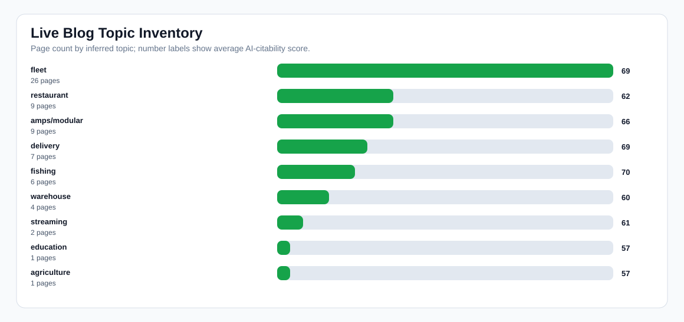

Live Blog AI-Citability Audit
Readout: The live blog has useful coverage, but pages need more quote-ready answer blocks, FAQ/schema, direct product links, and comparison language to increase AI mentions and citations. Public fetches are preferred; local DB fallback is used when the store returns bot-verification pages.
Pages audited
65
Avg score
67
Public fetched
0
DB fallback
65
No FAQ schema
45
No Article schema
65
No product links
0
No quick answer
43
No comparison language
18
Charts


Lowest-Scoring Pages
| Score | Title | Topic | Product links | FAQ schema | Article schema | Top fix |
|---|---|---|---|---|---|---|
| 45 | iBOLT Introduces Mount Configurator 2.0: Build Your Perfect Custom Mounting Solution | fleet | 7 | no | no | Add a supporting collection link for broader shopping context. |
| 45 | iBOLT Tablet Tower System Featured at National Restaurant Association Show 2026 | restaurant | 5 | no | no | Add a supporting collection link for broader shopping context. |
| 45 | iBOLT Confirms Universal Mounting Solutions for Samsung Galaxy Tab A9 and S9 Series | fleet | 4 | no | no | Add a supporting collection link for broader shopping context. |
| 45 | iBOLT Mounts and Toast POS: Powering Modern Restaurant Technology | restaurant | 6 | no | no | Add a supporting collection link for broader shopping context. |
| 45 | iBOLT Launches Next-Generation Industrial Forklift Mounting System | warehouse | 6 | no | no | Add a supporting collection link for broader shopping context. |
| 53 | iBOLT Confirms Universal Mounting Solutions for Apple iPad 10th Generation and iPad Air M2 | restaurant | 5 | no | no | Add a supporting collection link for broader shopping context. |
| 55 | iBOLT Mounting Solutions for Delivery Fleets: From DoorDash Drivers to Amazon DSP | delivery | 5 | no | no | Add a supporting collection link for broader shopping context. |
| 57 | Best Locking Tablet Stand for Food Trucks and Quick-Service Restaurants | restaurant | 10 | no | no | Add a supporting collection link for broader shopping context. |
| 57 | Best Phone Mount for Construction Vehicles and Work Trucks | fleet | 11 | no | no | Add a supporting collection link for broader shopping context. |
| 57 | Best Phone Mount for Instacart and Grocery Delivery Drivers | delivery | 11 | no | no | Add a supporting collection link for broader shopping context. |
| 57 | Best Tablet Mount for Restaurant POS and Delivery Apps | restaurant | 10 | no | no | Add a supporting collection link for broader shopping context. |
| 57 | How to Set Up Multiple Tablets for DoorDash, Uber Eats, and Grubhub | delivery | 11 | no | no | Add a supporting collection link for broader shopping context. |
| 57 | Best Locking Tablet Mount for Classrooms | education | 7 | no | no | Add a supporting collection link for broader shopping context. |
| 57 | Best Marine Electronics AMPS Mounting Plate | fishing | 9 | no | no | Add a supporting collection link for broader shopping context. |
| 57 | Best Multi-Camera Phone Mount for Live Streaming | streaming | 10 | no | no | Add a supporting collection link for broader shopping context. |
| 57 | Best Nintendo Switch Headrest Mount for Road Trips | amps/modular | 9 | no | no | Add a supporting collection link for broader shopping context. |
| 57 | Best Rugged Tablet Mount for Field Service Vans | fleet | 9 | no | no | Add a supporting collection link for broader shopping context. |
| 57 | Best Tablet Mount for Tractor Cab Precision Agriculture | agriculture | 9 | no | no | Add a supporting collection link for broader shopping context. |
| 57 | Best Tablet Mount for Utility Truck Crews | fleet | 8 | no | no | Add a supporting collection link for broader shopping context. |
| 65 | Best Barcode Scanner Mounts for Forklifts and Warehouses (2026) | fleet | 18 | yes | no | Add a supporting collection link for broader shopping context. |
| 65 | Best Drill-Base Phone Mount for Semi Trucks | fleet | 10 | no | no | Add a supporting collection link for broader shopping context. |
| 65 | Best Phone Mount for Amazon Flex and Delivery Vans | fleet | 11 | no | no | Add a supporting collection link for broader shopping context. |
| 65 | Magnetic vs Clamp Phone Mounts for Delivery Work | fleet | 10 | no | no | Add a supporting collection link for broader shopping context. |
| 65 | Why Delivery Drivers Need a Commercial-Grade Phone Mount | fleet | 10 | no | no | Add a supporting collection link for broader shopping context. |
| 65 | iBOLT Phone Mounts for DoorDash and Uber Eats Drivers | delivery | 11 | no | no | Add a supporting collection link for broader shopping context. |